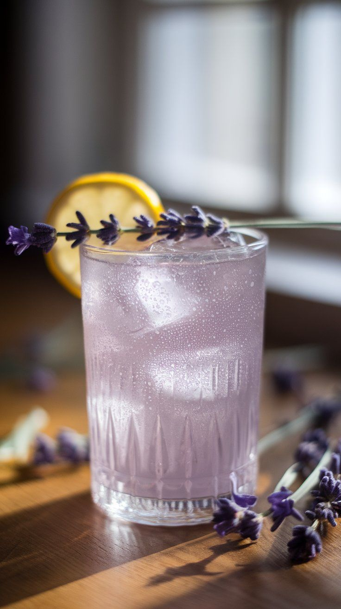

Lavender Collins
Drink floral, leve, com notas de lavanda, limão e gin.

INGREDIENTES
- 50ml de gin (prefira um gin floral, como Hendrick’s ou The Botanist)
- 25ml de xarope de lavanda (veja abaixo como fazer)
- 25ml de suco de limão fresco
- Água com gás (ou club soda)
- Gelo em cubos
- Flor de lavanda ou casca de limão para decorar
- 1 xícara de água
- 1 xícara de açúcar
- 2 col. (sopa) de flores de lavanda secas (ou 1 col. se for lavanda fresca)
MODO DE PREPARO
- Em uma panela, misture água e açúcar. Leve ao fogo baixo até dissolver.
- Adicione a lavanda, desligue o fogo e deixe em infusão por 15-20 minutos.
- Coe e guarde na geladeira por até 2 semanas.
- Em um copo alto (tipo Collins), encha com gelo até ¾.
- Adicione o gin, o xarope de lavanda e o suco de limão. Mexa suavemente.
- Complete com água com gás e decore com uma flor de lavanda ou casca de limão.